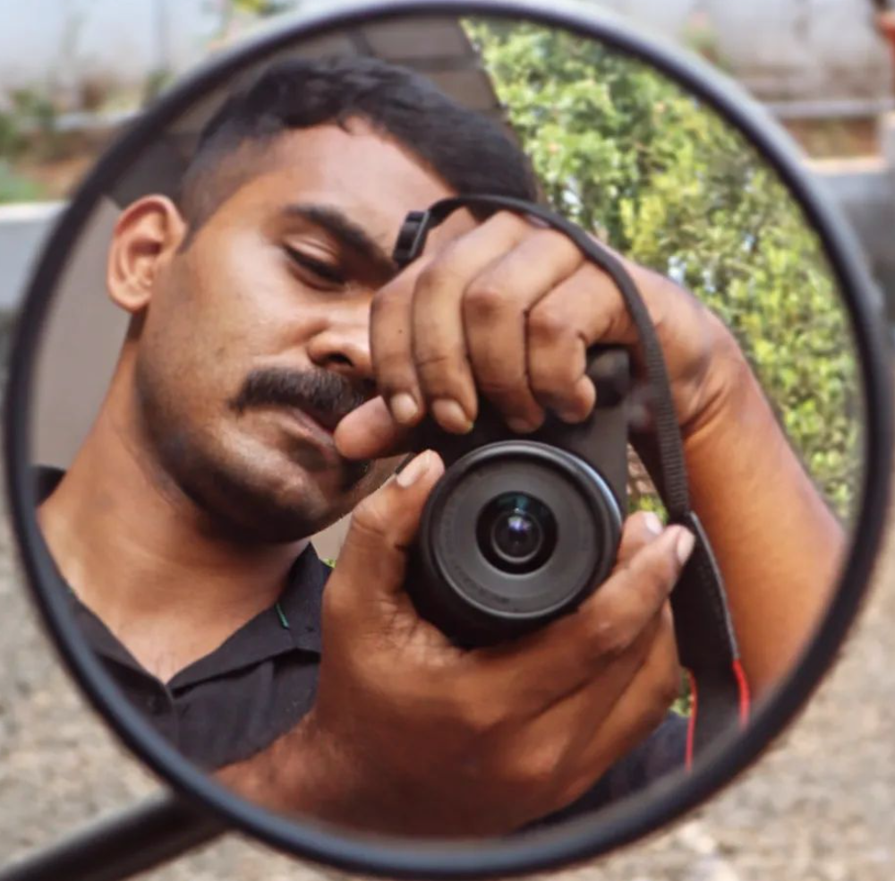

About Me
Passionate Computer Science graduate with strong foundations in AI, machine learning, and Linux systems. Experienced in supporting AI and robotics projects through hands-on technical skills and collaborative research. Eager to expand my knowledge and contribute to innovative technologies. Always open to new learning opportunities and challenges in the fields of AI, systems administration, and software development.
Download Resume"The only real mistake is the one from which we learn nothing."
— Henry Ford
Experience
(2024 - Present)
Technical Assistant
School of Artificial Intelligence & Robotics, Mahatma Gandhi University
- System Administration - NVIDIA DGX Station A100.
- Worked on Linux systems.
- Worked on various projects related to AI and robotics.
- Assisted in the development of AI-based projects.
- Collaborated with faculty and students on research projects.
Education
M.Sc. Computer Science
School of Computer Sciences, Mahatma Gandhi University
B.Sc. Computer Science
College of Applied Sciences (IHRD), Puthuppally
Get In Touch
I'm always open to new opportunities and collaborations. Feel free to reach out!
Email: atulanilkumar@gmail.com
LinkedIn: linkedin.com/in/atulanil